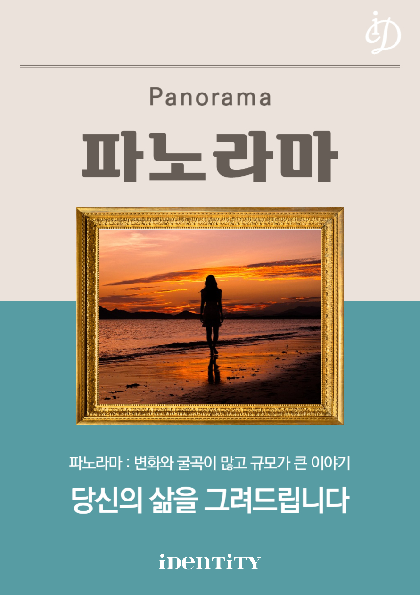

교 육
숏클(short class)
나를 바꾸는 아주 짧은 클래스. 청년들을 위한 다양한 주제의 인문학 강의를 진행. 최근 0.1%의 비밀과 관련된 "메타인지"를 소개함.

북+ 인사이드
SNS, 줄임말 사용 등으로 약해진 "문해력"을 "향상"하기 위한 교육 프로그램
나를 바꾸는 아주 짧은 클래스. 청년들을 위한 다양한 주제의 인문학 강의를 진행. 최근 0.1%의 비밀과 관련된 "메타인지"를 소개함.
SNS, 줄임말 사용 등으로 약해진 "문해력"을 "향상"하기 위한 교육 프로그램